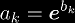
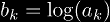

Towers and nested exponentials are difficult to deal with in their pure form, since a 0 or 1 in any exponent can cancel out all higher exponents, and the higher exponents influence the final value much more than the lower exponents. To have more tools available to deal with towers, it would be nice to be able to convert nested exponentials into a power series.
If you're wondering why the theorem is boxed, it's because it is my theorem, derived from scratch after months of hard work.
where k0 = 1.
We can prove this by induction. For clarity, we can substitute  without loss of information. As a basis (case 1), we know that:
If we assume the following (case n):
where k0 = 1, then it follows that:
![\BigT{k=1}{n+1}(\ee^{b_k}; z)
& = \BigT{k=1}{n}(\ee^{b_k}; \ee^{b_{n+1}z})
\\\notag & = \sum_{\substack{k_j \ge 0 \\ 1 \le j \le n}}
{(\ee^{b_{n+1}z})}^{k_n}
\prod_{i=1}^{n}\frac{(k_{i-1}b_i)^{k_i}}{(k_i)!}
\\\notag & = \sum_{\substack{k_j \ge 0 \\ 1 \le j \le n}}
\ee^{k_nb_{n+1}z} \prod_{i=1}^{n}\frac{(k_{i-1}b_i)^{k_i}}{(k_i)!}
\\\notag & = \sum_{\substack{k_j \ge 0 \\ 1 \le j \le n}}
\sum_{k_{n+1} \ge 0} \frac{{(k_nb_{n+1}z)}^{k_{n+1}}}{(k_{n+1})!}
\prod_{i=1}^{n}\frac{(k_{i-1}b_i)^{k_i}}{(k_i)!}
\\\notag & = \sum_{\substack{k_j \ge 0 \\ 1 \le j \le n}}
\sum_{k_{n+1} \ge 0} z^{k_{n+1}} \frac{{(k_nb_{n+1})}^{k_{n+1}}}{(k_{n+1})!}
\prod_{i=1}^{n}\frac{(k_{i-1}b_i)^{k_i}}{(k_i)!}
\\\notag & = \sum_{\substack{k_j \ge 0 \\ 1 \le j \le (n+1)}}
z^{k_{n+1}} \prod_{i=1}^{n+1}\frac{(k_{i-1}b_i)^{k_i}}{(k_i)!}](img/tex/tw-proof-big.png)
which is case (n + 1). Since case n implies case (n + 1), substituting z = 1 and  proves the theorem.